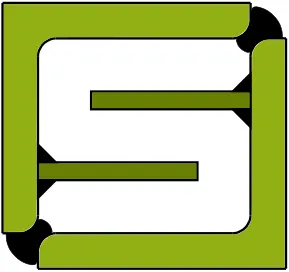
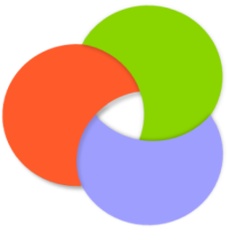

Structural Safety, Risk and Reliability Lab
Department of Civil Engineering, IIT Bombay
About the lab
The SSRR Lab works on keeping structures safe over their whole life: how likely they are to fail, what that failure would cost, and how maintenance should be planned around it.
The lab is led by Prof. Siddhartha Ghosh, JK and MJ Mehta Chair Professor of Structural Engineering, and the research is released as open-source software and open data.
Software
Tools built at the lab for steel structures and bridges.
-

Osdag
Free, open-source software for the design and detailing of steel structures to Indian Standard IS 800:2007.
Visit osdag.fossee.in ↗ -

3psLCCA
Life-cycle cost assessment of bridges, including short-span highway bridges.
Visit 3pslcca.github.io ↗ -
OsdagBridge
An open-source solution for the design of short-span steel bridges.
Visit osdagbridge.github.io ↗
Explore our database
Datasets from our work, ready for your own use. Browse them, inspect the details and download the data. More datasets are added over time.